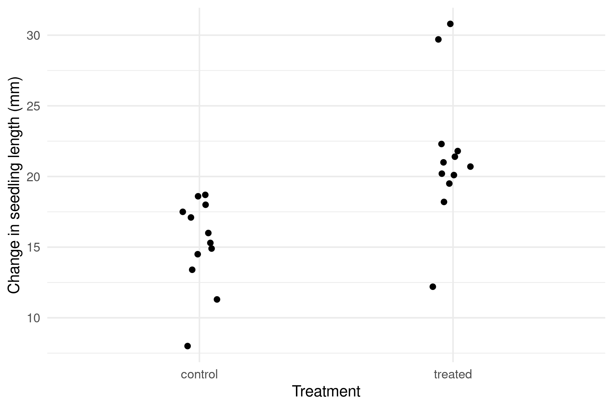

library(readr)
library(dplyr)
library(ggplot2)
seedlings <- read_csv("data/seedlings.csv", show_col_types = FALSE)
seedlings <- mutate(seedlings, growth_mm = final_mm - initial_mm)
head(seedlings)Day 8 — Turn measurements into a useful figure
Lecture slides · Weekly self-check
Today’s question
Do plants that started longer also end longer? And how much did each plant grow? A new column and a labelled figure can answer these questions without editing cells by hand. Start a script called day08.R in your project root.
Create a derived measurement
mutate() returns a table with a new or changed column. We assign that returned table to seedlings. Within this function, R looks for final_mm and initial_mm in the supplied table. The original file on disk is unchanged. For P01, check 44.3 minus 25.7: the growth is 18.6 mm. A negative change would mean the recorded final length was smaller; it would deserve checking, not automatic deletion.
The new variable describes change, while final_mm describes size. These answer different questions. Always say which you are comparing.
Select observations and variables
control_plants <- filter(seedlings, treatment == "control")
growth_table <- select(seedlings, plant_id, treatment, growth_mm)filter() selects rows satisfying a condition. == asks whether values are equal; it does not assign values. Quotation marks mark the text label "control". select() chooses columns. Neither operation changes the original raw CSV. Inspect control_plants: it should have twelve rows. growth_table should have 24 rows and three columns.
Sometimes it is easier to read a sequence from left to right:
longer_control <- seedlings |>
filter(treatment == "control") |>
filter(growth_mm > 15)The base R pipe |> passes the result on its left as the first argument to the next function. Read this as “take seedlings, keep controls, then keep growth over 15 mm”. This is a convenience for joining steps, not a new biological operation. Run intermediate steps when diagnosing a problem.
Map columns to a figure
size_plot <- ggplot(seedlings, aes(x = initial_mm, y = final_mm,
colour = treatment)) +
geom_point(size = 2) +
labs(x = "Initial seedling length (mm)",
y = "Final seedling length (mm)",
colour = "Treatment") +
theme_minimal()
size_plotggplot() identifies the table. aes() maps columns to positions and colour. Each point is one plant. The + adds a layer or a display instruction to the figure. The plus at the end of a line tells R that the expression continues. Colour maps a group label; it does not mean the treatment is a numeric measurement.
Read the labels before interpreting the pattern. The horizontal axis is initial length, so this figure does not directly show growth. It also cannot by itself prove that starting longer causes a larger final length.
growth_plot <- ggplot(seedlings, aes(x = treatment, y = growth_mm)) +
geom_point(position = position_jitter(width = 0.08, height = 0, seed = 8),
alpha = 0.8) +
labs(x = "Treatment", y = "Change in seedling length (mm)") +
theme_minimal()
growth_plotThis shows growth for each group. A small horizontal jitter separates points that would overlap; height = 0 leaves every measured vertical value unchanged. seed = 8 makes this display repeatable. No test is needed today: describe what you can see, including overlap and variation among plants.
Save something another application can read

ggsave("output/seedling-growth.png", plot = growth_plot,
width = 6, height = 4, dpi = 150)
write_csv(growth_table, "output/seedling-growth.csv")The supplied project includes output/. These commands create files there; they may replace files with the same names. The plot object in memory and the PNG on disk are different things. Locate and open both saved outputs in the file manager.
Your practical
- Recreate both plots from the start of the script and calculate P02’s growth by hand to check the subtraction.
- Save a table containing only treated plants’ IDs and growth measurements.
- Choose one transfer task: make a plot of initial length against growth with axes labelled in mm, or adapt the same workflow to the organic-product table below. Do one, not both.
- Write two sentences: one describing a visible pattern, one identifying a question the plot alone cannot settle.
- Restart R and run the script. Confirm the saved files still open afterwards.
Alternative transfer task: a derived yield column
Our simulated table data/organic-recovery.csv records twelve separate runs of an organic synthesis, six assigned to each of two protocols, standard and modified. A run is one independently performed preparation. These labels identify procedures; you do not need to know their chemical steps.
Each row supplies a theoretical_mass_g: the maximum product mass from that run’s starting materials. isolated_mass_g is collected dry product, assumed pure for this simplified exercise. Both are grams. Calculate yield_percent = 100 × isolated_mass_g / theoretical_mass_g. You are given the maximum and do not need to derive it from a reaction. The first run, Y01, has 1.00 g maximum and 0.62 g collected, so its yield is 62%.
organic <- read_csv("data/organic-recovery.csv", show_col_types = FALSE)
organic <- mutate(organic,
yield_percent = 100 * isolated_mass_g / theoretical_mass_g)
head(organic)The runs started at different scales, so larger collected mass alone need not mean a greater yield. Inspect the supplied dictionary in data/README.md. Make a plot with protocol on x and percentage yield on y, using the familiar individual-point pattern. Label its y-axis “Isolated product yield (%)”. Save the derived table to output/organic-yields.csv and your plot to output/organic-yields.png. Keep its import and calculation in day08.R.
Hint: adapt the roles, not just the title
Use organic as the plot’s data, protocol for x, and yield_percent for y. Choose horizontal jitter with zero vertical jitter as above. Use write_csv() for the derived table and ggsave() for the figure. Expect 12 rows, no missing masses, and Y01 at 62%. A plot shows these results; it does not establish that one protocol is generally better or that a higher yield means purer product.
Hint: a plot or file is missing
Printing growth_plot shows the plot; assigning it alone may not. Check getwd() and dir.exists("output") if saving fails. If a column is not found, check names(seedlings) and run the earlier mutate() line.
Extended practical — derive, select, plot, and verify
Allow about 90 minutes. Start day08-transfer.R at the project root. The new seedlings-transfer.csv is an independent simulated seven-day study of eighteen plants, nine per group. Its variable definitions match the main seedling table, but its values and identifiers differ. Reusing a workflow means changing the input deliberately and checking the outputs, not simply changing a plot title.
- Import the new table into
transfer, inspect it, and calculategrowth_mmusingmutate(). Check T01 by hand: 40.3 − 25.3 = 15.0 mm. Verify the row count before and after adding the column; a calculation should not itself remove plants. - Create a compact table of plant ID, treatment, and growth. Then create a separate table containing treated plants only. State in comments which step selected columns and which selected rows. Record the expected row counts before running each selection.
- Make an initial-length versus final-length plot, then an initial-length versus growth plot. Keep the horizontal units in mm and label the actual vertical quantity on each. Explain why a conclusion about final size is not automatically a conclusion about how much a plant changed.
- Make the individual-growth-by-group plot with horizontal jitter and zero vertical jitter. Change only the horizontal jitter width and compare the display. The measured growth values must not change. Explain that spreading points sideways helps visibility but does not create additional plants.
- Save the derived full table, the selected treated table, and two useful plots under names starting
transfer-inoutput/. Open each saved file graphically and confirm its contents. A plot object printed in R is not automatically an exported image; writing a CSV is not exporting a figure. - Write a caption stating the independent unit, outcome, units, and meaning of each point. Add two interpretation sentences and one limitation. Compare the workflow with the main seedling example: which names changed, which operations stayed the same, and which conclusions depend on the new data?
Hint: check the result before polishing the plot
There should be 18 rows in the full derived table and nine in the treated subset. growth_mm has the same length as the input. Check the original columns remain available. To select treated rows use the given label with ==; do not accidentally assign an object or assume every second row is treated.
Independent transfer — calculate requested dilutions
Plan 60–90 minutes. A stock is a supplied solution of known concentration. Dilution uses some stock and solvent to reach a final total volume. Assume no solute reacts or is lost. The amount stays the same, so the stock volume required is target concentration × final total volume / stock concentration. Both concentrations are supplied in mmol/L; using mL for final volume gives mL for the required stock. These are numerical cases, not laboratory instructions.
- Import
data/dilutions.csv, inspect its four rows, and retain every original request. Usemutate()to addstock_volume_mlfrom the stated formula. Work D02 by hand before running the table calculation: stock 500 mmol/L, target 50 mmol/L, final total volume 50 mL. - Add a logical column
possible_by_dilutionusingtarget_mmol_l <= stock_mmol_l. Explain that<=means “less than or equal”. A target more concentrated than the stock cannot be obtained by adding solvent alone. Keep that row flagged; do not drop it silently or invent a stronger stock concentration. - Inspect
stock_volume_ml <= final_volume_mlas a second check for these positive supplied cases. Identify the request that fails and explain why a numerical result can be calculable while the intended procedure is impossible. - Save the complete flagged table as
output/dilution-check.csv. Usefilter(possible_by_dilution)to create a separate supported-results table. Plot final total volume against required stock volume for those supported cases, with both axes in mL. Do not interpret this supplied formula relation as an observed biological association needing a statistical test. - Write
reports/dilution-interpretation.txtwith the requested outputs, impossible-case explanation, and a sentence distinguishing “bring to 50 mL total” from “add 50 mL solvent”. Preserve the denominator units in the source. - Restart R and regenerate tables and plot. A partner should identify the impossible request from the saved flagged table without seeing your Console. They should also be able to explain why its row still appears in the audit.
Check and retain: D01–D03 need 2.5, 5, and 10 mL of stock respectively. D04’s formula produces 100 mL stock for a 50 mL final request and must be flagged; its target is 200 mmol/L while its stock is only 100 mmol/L. Do not present that number as a preparation recipe or erase the input that revealed the issue.
Check your understanding
Why keep the raw table?
A derived table lets someone trace the calculation back to the recorded lengths. P02 grew 8.0 mm. Selecting columns is not selecting plants; select() and filter() act on different parts of the table.
Keep: day08.R, your derived tables, and figures in output/. If you chose the organic transfer, its two organic-yields outputs replace the extra initial-length-versus-growth figure; retain the main seedling work. Next: put explanation and code in one report.